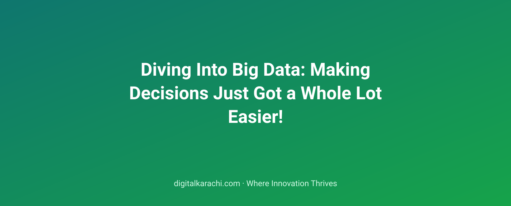

Notebook Discipline: When to Graduate to Scripts and Tests
As your data science projects grow, transitioning from notebooks to scripts and tests is crucial for maintaining code quality and scalability.
All articles filed under Data Science.
As your data science projects grow, transitioning from notebooks to scripts and tests is crucial for maintaining code quality and scalability.
Why consolidating data into a robust product analytics platform can lead to better decision-making and user experience.
Learn how to implement scalable funnel analytics in your application to optimize user journeys and maximize conversions.
Learn the principles behind Bayesian A/B testing and how it can help you make data-driven decisions in your tech projects.
Cohort analysis helps in understanding user behavior, but it can lead to misinterpretation if not performed carefully.
Data quality monitoring is essential but often overlooked, ensuring the integrity of data-driven decisions in organizations.
Learn how modern data science techniques like RFM and embedding-based clustering can revolutionize customer segmentation for businesses of all sizes.
Navigating the critical first quarter to lay down a robust data foundation in an organization.
Understanding and applying statistical significance in product development can help teams make data-driven decisions without getting lost in complex terminology.
Explore the evolving landscape of data stacks, understanding their components, costs, and key trade-offs in today's tech-driven world.
Data contracts are reshaping how data producers ensure consistency and integrity in their datasets, making them indispensable for modern data pipelines.
Explore the powerful yet accessible methods of geospatial analytics that can help non-experts unlock valuable insights from location data.
Data lineage is crucial for maintaining trust in data-driven decisions. Learn why tracking data origins, transformations, and uses matters.
How to create effective data visualizations that engage users and drive meaningful insights.
Learn how to effectively communicate insights using techniques borrowed from journalism to make your data stories compelling and impactful.
Explore how Reverse ETL transforms data back into operational systems, optimizing processes and enhancing decision-making.
Learn how to effectively sample streaming data for analytics without losing critical insights.
Learn how to apply survival analysis techniques in churn modeling, enhancing your predictive capabilities and business insights.
Explore the key factors to consider when choosing between building or buying experimentation platforms for your data science projects.
Senior data analysts master advanced SQL techniques that optimize performance and derive deeper insights.
Borrowing from Software Development. Data science draws heavily from software development – think DevOps evolving into MLOps. The 'full-stack data scientist' has become the must-ha…

The buzzword era of Big Data is over. What's left is the boring, useful infrastructure that lets ordinary teams answer ordinary questions — fast.